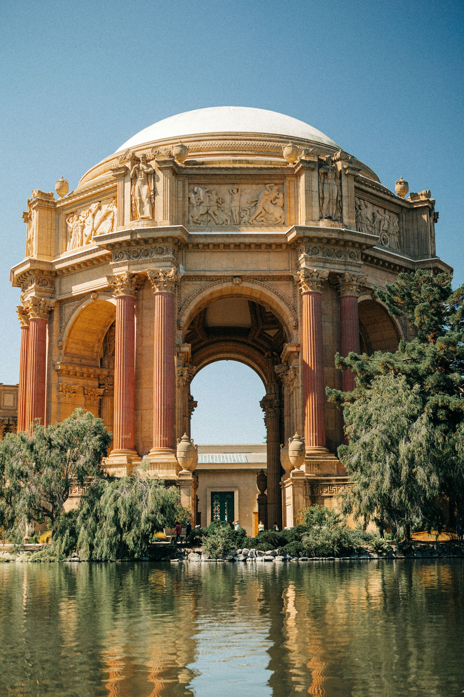
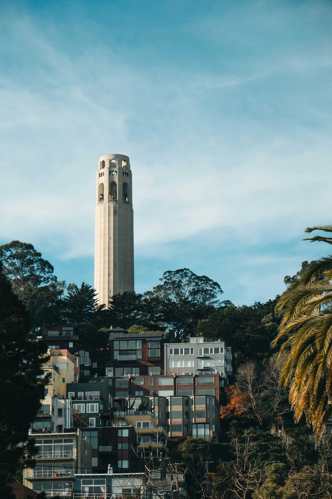
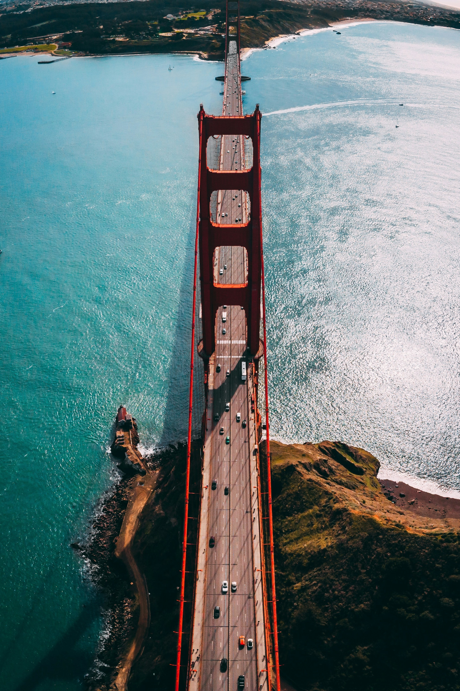
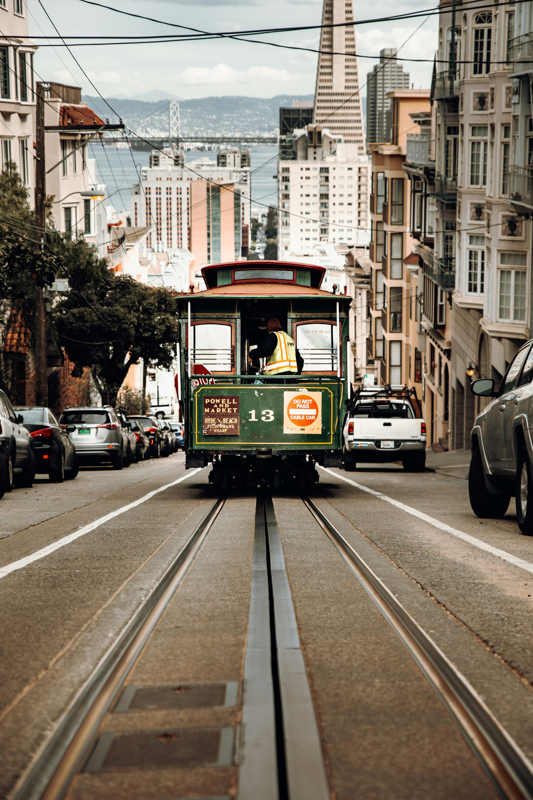
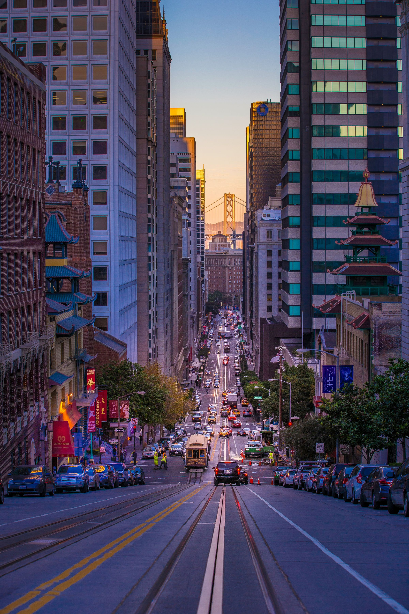
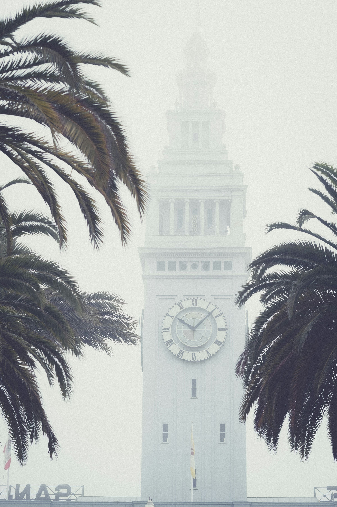
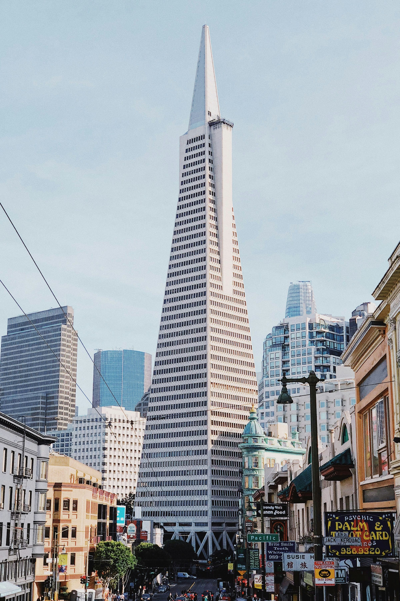
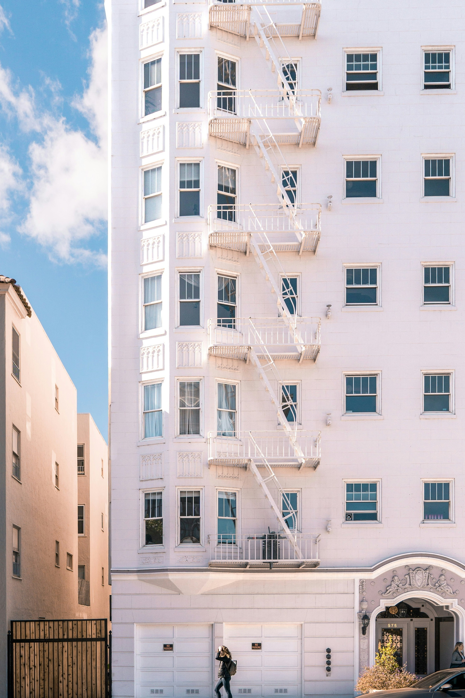

Attractions
Food
Sports
History
Transportation
Sights in San Francisco!

Palace of Fine Arts

Coit Tower

Golden Gate Bridge

Green Trolley

California St.

Ferry Building Clock Tower

Transamerica Pyramid

White Apartments